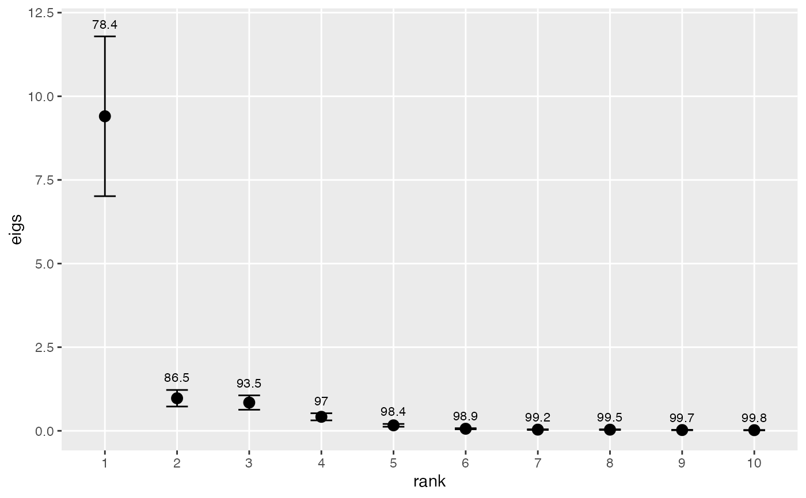

Plots the variances associated with empirical orthogonal functions (EOF). Useful for deciding how many EOFs to retain for rotation.
eofNum(x, n = nrow(x), scale. = TRUE)
| x | a data frame or matrix, with no missing values |
|---|---|
| n | effective sample size |
| scale. | logical indicating whether the (centered) variables should be scaled to have unit variance |
A plot of the eigenvectors.
Calculates the eigenvalues from an EOF analysis, as described in
eof. The eigenvalues are plotted against eigenvalue number
(sometimes called a “scree plot”), and the cumulative variance as %
of total is plotted over each eigenvalue. The approximate 0.95 confidence
limits are depicted for each eigenvalue using North et al.'s (1982)
rule-of-thumb, which ignores any autocorrelation in the data. If the
autocorrelation structure is assessed separately and can be expressed in
terms of effective sample size (e.g., Thiebaux and Zwiers 1984), then
n can be set equal to this number.
There is no universal rule for deciding how many of the EOFs should be retained for rotation (Hannachi et al. 2007). In practice, the number is chosen by requiring a minimum cumulative variance, looking for a sharp break in the spectrum, requiring that confidence limits not overlap, various Monte Carlo methods, or many other techniques. The plot produced here enables the first three methods.
Hannachi, A., Jolliffe, I.T., and Stephenson, D.B. (2007) Empirical orthogonal functions and related techniques in atmospheric science: A review. International Journal of Climatology 27, 1119--1152.
North, G., Bell, T., Cahalan, R., and Moeng, F. (1982) Sampling errors in the estimation of empirical orthogonal functions. Monthly Weather Review 110, 699--706.
Thiebaux H.J. and Zwiers F.W. (1984) The interpretation and estimation of effective sample sizes. Journal of Climate and Applied Meteorology 23, 800--811.
# Create an annual time series data matrix from sfbay chlorophyll data # Average over each year chla1 <- aggregate(sfbayChla, 1, mean, na.rm = TRUE) chla1 <- chla1[, 1:12] # remove stations with missing years eofNum(chla1)# These stations appear to act as one with respect to chlorophyll # variability on the annual scale because there's one dominant EOF.